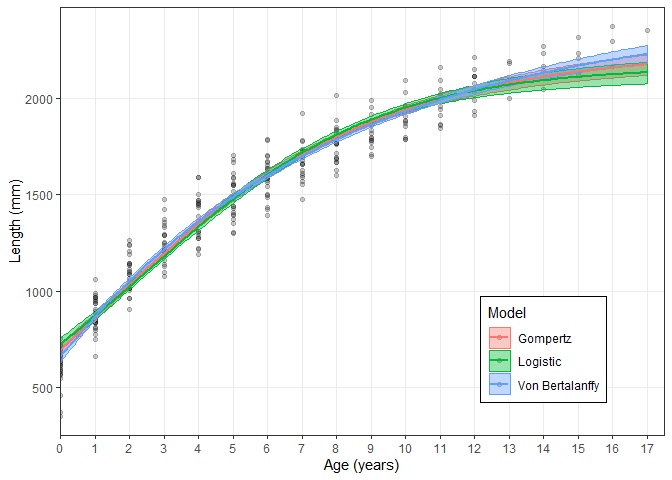
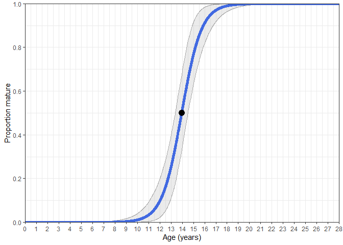

AquaticLifeHistory allows users to undertake fisheries life history analyses using contemporary approaches as simple R functions. These analyses currently include length-at-age modelling using a multi-model approach, estimating age-at-maturity and length-at-maturity. The main package functions are:
-
Estimate_Growth()performs length-at-age analyses using a von Bertalanffy growth model, Gompertz model and/or Logistic model. -
Estimate_Age_Maturity()Estimates age-at-maturity using either binomial maturity or proportion mature data and age. -
Estimate_Len_Maturity()Estimates age-at-maturity using either binomial maturity or proportion mature data and length.
Installation
You can install the released version of AquaticLifeHistory from Github with:
# install.packages("devtools")
devtools::install_github("jonathansmart/AquaticLifeHistory")Usage
Perform growth analysis
library(AquaticLifeHistory)
# load example data set
data("growth_data")
# Run function with three default model candidates.
# Model parameters, AIC values are returned and a plot with bootstrapped CI's is printed to examine fits.
Estimate_Growth(growth_data)
#> $VonB
#> Parameter SE
#> Linf 2439.5652138 50.416331766
#> k 0.1253499 0.006938586
#> L0 659.2971929 14.318722887
#> RSE 97.9461196 NA
#>
#> $Logistic
#> Parameter SE
#> Linf 2163.8640309 26.46867817
#> g 0.2894532 0.01039625
#> L0 727.0885234 13.58771346
#> RSE 110.3850532 NA
#>
#> $Gompertz
#> Parameter SE
#> Linf 2250.136998 32.621706305
#> g 0.207524 0.008455423
#> L0 695.603478 13.779414070
#> RSE 103.855273 NA
#>
#> $AIC
#> Model AICc AIC diff Weight
#> 1 VB 3535.10 0.00 1
#> 2 Log 3605.40 70.30 0
#> 3 Gom 3569.54 34.45 0Perform age-at-maturity analysis
# load example data set
data("maturity_data")
# Run function to estimate age-at-maturity parameters
Estimate_Age_Maturity(maturity_data)
#> Estimate SE
#> A50 13.95113 0.3033328
#> A95 16.53427 0.5321205
# A plot can also be returned with bootstrapped CI's.
Estimate_Age_Maturity(maturity_data, return = "plot")
For further examples of these and other functions use the provided vignettes
browseVignettes("AquaticLifeHistory")